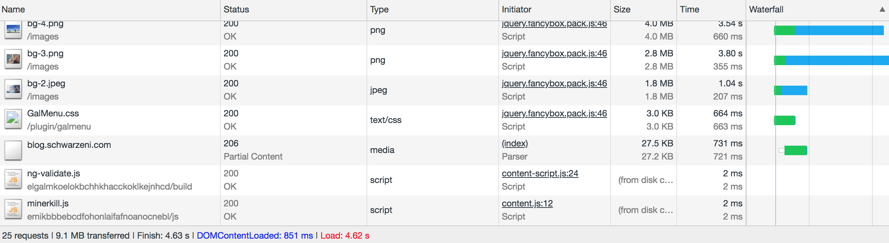
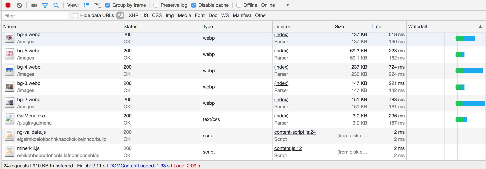

最近在浏览一个网页的时候发现这个网页的部分图片格式为webp，比较好奇就去了解了一下，这是Google开发的一种旨在加快图片加载速度的图片格式。
突然有一种想尝试的冲动，因为个人博客的背景轮播图有四五张，每一张图片的大小都在1MB以上，没用游览器缓存的话加载的速度有一点长，所以打算着手把这几张图片换为webp格式
首先需要下载webp的格式转换工具，我使用的是macOS，所以就直接用homebrew安装就ok了，别的操作系统参考这个链接，可能需要翻墙。
1 | brew install webp |
安装完之后就可以在命令行调用两个工具，cwebp用于将别的格式的图片转为webp格式，而dwebp用于将webp格式的图片转变为其它格式的图片，下面是两个例子，详细介绍参考这个链接，可能需要翻墙
1 | cwebp -q 80 image.png -o image.webp |
就这样我把我博客的代码更新后，每张图片的大小都从2,3MB压缩成了100KB左右，前后加载时间如下图


减少了50%的加载时间，效果显著
但是，只有使用和Chrome相同内核的浏览器才能支持这个格式，想是Firefox就不支持，所以还是需要png等格式的图片作为备用的，在css的background-image里写两个url就可以了，例子如下
1 | background-image: url('/images/bg-2.webp'),url('/images/bg-2.jpeg'); |
另：用Firefox打开我网站的时候浏览器占用的内存爆到了1.5G，cpu占了40%多，而且就Firefox有问题，好奇怪….